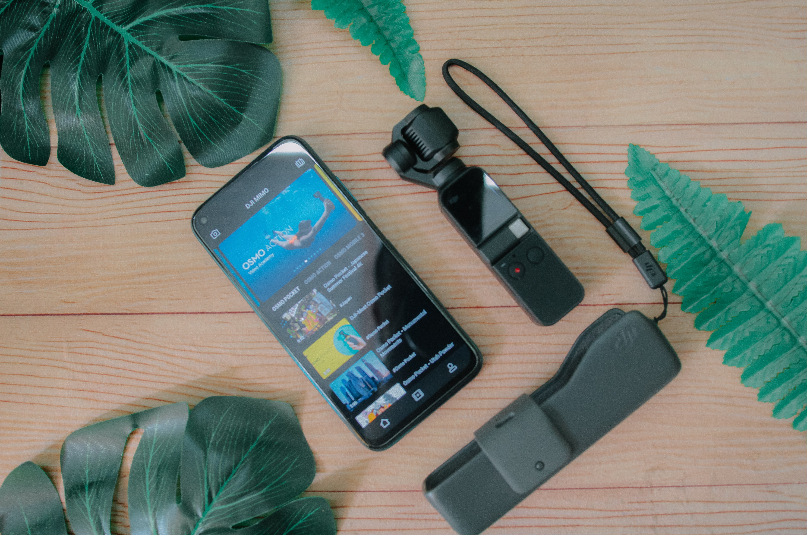
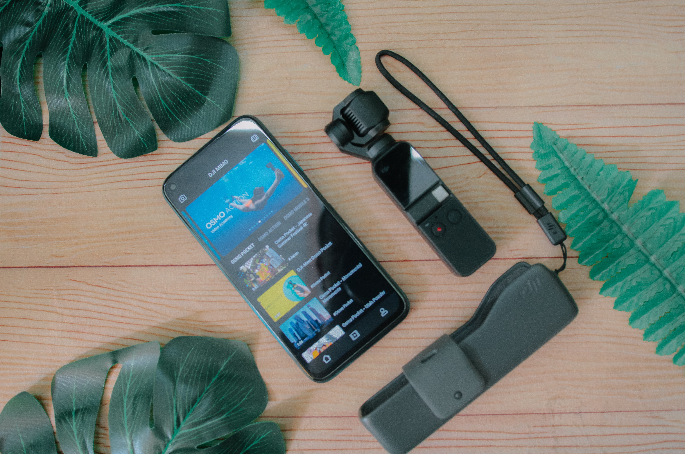

O que são as criptomoedas? Entenda!
As criptomoedas são moedas digitais que usam uma tecnologia que permite a negociação direta entre as partes, sem precisar, por exemplo, de uma instituição financeira para fazer a compensação da transação.
Essas transações são validadas por todos os usuários e registradas em um banco de dados chamado de blockchain. Além disso, para garantir a segurança, elas também são criptografadas. É como se cada participante ficasse com um recibo dessa transação armazenado no sistema eletrônico.
Por exemplo, é possível comprar uma criptomoeda por meio de uma corretora e vender para um investidor em qualquer parte do mundo através de um sistema eletrônico.
Você pode adquirir essas moedas também pela mineração. Existem algumas formas de minerar bitcoins, sendo as mais utilizadas os processos de Proof of Work e de Proof of Stake.
No Proof of Work, utilizado pelo Bitcoin, os “mineradores” são pessoas que colocam computadores para resolver problemas matemáticos que permitem a realização de blocos de operações. Esse processo é criticado por necessitar de quantidades muito relevantes de energia.
Já o processo de Proof of Stake seleciona aleatoriamente validadores de transações. Dessa maneira, os mineradores não competem entre si e computadores poderosos que consomem muita energia não garantem maior capacidade de minerar novas moedas. A autenticidade da operação ocorre através da comprovação de que o usuário tem acesso a uma certa quantidade de moedas antes de ter acesso ao trabalho de mineração.
Quem minera, ganha como recompensa tokens das moedas digitais. Isso também contribui com a segurança das transações com criptoativos, porém é uma prática voltada para especialistas neste mercado.
Como transacionar criptomoedas?
Com uma carteira digital, você pode fazer várias transações com criptomoedas, como pagar compras, hotéis e até comprar um apartamento. No Brasil, a construtora Tecnisa já aceita o pagamento da compra de imóveis com Bitcoins.
Em março de 2021, o CEO da Tesla, Elon Musk, informou que os clientes da empresa poderiam comprar carros elétricos usando esses ativos como meio de pagamento. A companhia voltou atrás por conta dos danos ambientais do processo de mineração, mas a decisão, que impulsionou o preço do Bitcoin à época, pode ser revertida no futuro, conforme documento enviado à SEC, regulador dos EUA.
Outras gigantes do universo de meios de pagamento, como Paypal ,Visa e Mastercard, também já realizam pagamentos com criptoativos.
 
